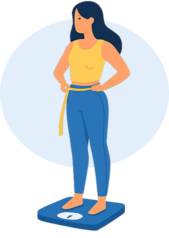

Calcule seu IMC agora
Informe seus dados e descubra se está dentro do peso ideal.

Tabela de Referência
- Abaixo do peso
- Peso normal
- Sobrepeso
- Obesidade
Alimentação saudável
Prefira alimentos naturais e balanceados.
Exercícios regulares
Pratique atividades físicas frequentemente.
Sono adequado
Garanta entre 7–9 horas de sono por noite.